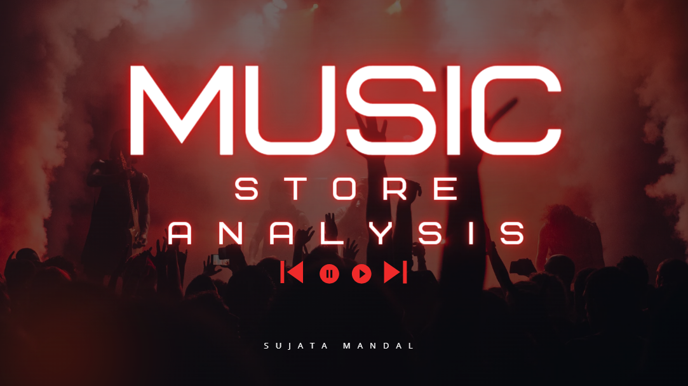

Hello Everyone, I am Sujata Mandal Aspiring and Dedicated Data Analyst with a passion about transforming raw data into actionable insight. Eager to leverage analytical and technical skills to drive business analysis and decision-making in a dynamic environment.
►My key Skills are Data analytsis, Statistical analysis, Predictive Analytics, Data Visualization, Problem Solving.
►Graduated with a Bachelor's in hospitality and hotel administration and switching my domain into data analytics. Which has been a very amazing journey so far.
►I am a passionate and dedicated professional with strong abilities in the data-driven domain. With a robust foundation in data analysis, machine learning, and statistical modeling, I thrive on transforming complex datasets into actionable insights. My enthusiasm for continuous
learning drives me to stay updated with the latest advancements in technology and data science. I am eager to tackle new challenges and expand my expertise, ensuring that I can contribute effectively to innovative project for your organisation's success..
.


Utilized Power BI to create comprehensive dashboards, uncovering key
customer risk insights and churn patterns to inform data-driven retention strategies.

Leveraged Power BI to analyze and visualize call center trends, providing
insights into customer satisfaction, call resolution rates, and agent performance.
This project demonstrates my expertise in transforming data into actionable business intelligence.

This is SQL-based movie analysis project entails querying a dataset with various movie attributes like genre, release date, revenue, and ratings to derive statistical measures and identify trends..

This project utilizes SQL to analyze data from an online music store with the aim of extracting meaningful insights into various aspects of the store's operations.

Utilizes Power BI to create data visualizations that provide insights into developer demographics, salaries, preferred programming languages, and job satisfaction.

Utilized Power BI to develop an insightful Diversity & Inclusion dashboard,
showcasing key metrics on gender balance, promotions, turnover rates, and
workforce demographics. This project highlights my ability to leverage data
visualization for actionable business insights.
This project involved analyzing key sales metrics and customer
insights using Excel for data visualization, pivot tables for detailed analysis,
and charts to highlight trends and performance.